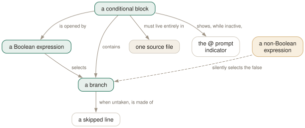

Day 14
Conditional scripts
A four-command language with no arithmetic, no loops, and one silent failure mode.
By the end of today you can
- branch a script on what a query found, using \gset and :{?name}
- read the prompt indicator that tells you you are inside a skipped branch
- name the one way a conditional can fail while the script still reports success
Four commands, and no expression language
\if, \elif, \else, \endif — nestable, and that is the whole of it. There is no arithmetic, no comparison, no loop. Understanding why is the fastest route to using them well.
\if does not evaluate its argument. It interpolates variables and expands backquotes, and then reads the resulting text exactly as it reads the value of an on/off variable: any case-insensitive match for true, false, 1, 0, on, off, yes, no — or an unambiguous prefix, so t, T and tR are all true.

ON_ERROR_STOP does not catch it, so the script exits 0. A skipped branch is genuinely inert: nothing is sent, no variable is expanded, no backquote is run.Branching on what a query found
The standard shape is a query that computes Booleans, \gset to turn them into variables, and a block that reads them. This is the manual page's own example, and it is worth typing once:
-- do two particular records exist?
SELECT EXISTS(SELECT 1 FROM customer WHERE customer_id = 123) AS is_customer,
EXISTS(SELECT 1 FROM employee WHERE employee_id = 456) AS is_employee
\gset
\if :is_customer
SELECT * FROM customer WHERE customer_id = 123;
\elif :is_employee
\echo 'not a customer but is an employee'
SELECT * FROM employee WHERE employee_id = 456;
\else
\echo 'neither'
\endif
The second shape uses yesterday's NULL rule. A \gset column that comes back NULL unsets its variable rather than setting it, and :{?name} is TRUE or FALSE according to whether a variable exists. Together they turn “did the lookup find anything” into a Boolean without a second query:
testdb=# SELECT max(first) AS hi FROM my_table WHERE second = 'nine' \gset
testdb=# \if :{?hi}
testdb@# \echo found: :hi
testdb=# \else
testdb=# \echo nothing matched
testdb=# \endif
nothing matched
Note the prompt in that transcript. In an inactive branch %R shows @ instead of =, and psql tells you when it ignores something: “\echo command ignored; use \endif or Ctrl-C to exit current \if block”. If you have ever been stuck at a psql that refuses to do anything, that @ is what you were looking at.
The failure that reports success
This is the day's real content. An expression that does not evaluate to a Boolean is treated as false, and it does not stop the script — not even with ON_ERROR_STOP set:
$ cat guard.sql
\if maybe
\echo migrating
\endif
\echo done
$ psql -X -v ON_ERROR_STOP=1 -f guard.sql; echo $?
psql:guard.sql:1: error: unrecognized value "maybe" for "\if expression": Boolean expected
done
0
Two defences. Use :{?name} for existence tests, because it is always substituted and always yields TRUE or FALSE. And where the value matters, assert it rather than assuming it:
\if :{?target_schema}
\else
\warn target_schema was not set; refusing to run
\q
\endif
\warn refusing to run against :DBNAME
DO $$ BEGIN RAISE EXCEPTION 'wrong database'; END $$;
-- psql -X -v ON_ERROR_STOP=1 -f guard.sql -> exit 3
Second, note that the \warn argument above is not quoted. Interpolation in a meta-command argument happens only for an unquoted colon, so \warn 'against :DBNAME' prints the literal :DBNAME while \warn against :DBNAME prints against testdb. The quotes you add for readability are exactly what stops the substitution you wanted.
The other structural failure is an unclosed block. Reaching EOF with an \if still open is an error — “reached EOF without finding closing \endif(s)” — and that one does respect ON_ERROR_STOP, giving you exit code 3. So of the two ways to get a conditional wrong, one is catchable and the other is not.
What a skipped branch does not do
Lines in an untaken branch are parsed, so that psql can find the matching \elif, \else or \endif. Beyond that they are inert, and the list of what does not happen is the useful part:
- Queries are not sent to the server.
- Backslash commands other than the four conditionals are ignored — including
\!,\copyand\i. - Variable references are not expanded, and backquotes are not run. So a
`rm -rf ...`inside a skipped branch does nothing at all. - Conditional nesting is still checked, so a stray \endif in a branch you never take is still reported.
That third point is what makes \if trustworthy as a guard around destructive work, rather than merely a way of not printing things.
Idempotence, which is what this is really for
Most SQL scripts want to be safe to run twice. Some of that is available in SQL — CREATE TABLE IF NOT EXISTS, DROP ... IF EXISTS, CREATE OR REPLACE — and some is not, notably ALTER TABLE ... ADD COLUMN on older servers, and anything whose guard is a data question rather than a schema one. That gap is where \if earns its place:
SELECT NOT EXISTS (
SELECT 1 FROM information_schema.columns
WHERE table_schema = 'app' AND table_name = 'orders' AND column_name = 'shipped'
) AS needs_column
\gset
\if :needs_column
ALTER TABLE app.orders ADD COLUMN shipped timestamptz;
\echo 'added app.orders.shipped'
\else
\echo 'app.orders.shipped already present'
\endif
And the guard at the top of a migration, which is five lines and prevents the class of accident nothing else will: refuse to run unless the database is the one you think it is.
SELECT current_database() = 'staging' AS right_db \gset
\if :right_db
\else
\warn refusing to run against :DBNAME
DO $$ BEGIN RAISE EXCEPTION 'wrong database'; END $$;
\endif
Today's habit
Add a guard to one script. Either the wrong-database check or a :{?name} assertion on its arguments — whichever the script's last near-miss suggests. And remember the shape of the silent failure: a conditional whose expression is not a Boolean does nothing and says everything went fine.
Tomorrow: the prompt, which after today you have a specific reason to care about.
New vocabulary
Commands
| Command | Does |
|---|---|
\if expression | Open a block. The expression is interpolated, then read as a Boolean. |
\elif expression | Another arm. Not evaluated at all once an earlier arm has matched. |
\else | At most one, and last before the \endif. |
\endif | Close the block. Must be in the same source file as its \if. |
Drillsdo these in a real terminal, today
Self-check
Answer out loud first, then unfold.
A deployment script has \if :should_migrate where the variable was never set. What runs, and what does the script exit with?
An unset name is not interpolated, so the expression is the literal text :should_migrate, which is not a Boolean. psql reports “unrecognized value ":should_migrate" for "\if expression": Boolean expected”, treats it as false, and skips the block.
And the exit code is 0 — even with ON_ERROR_STOP set. The manual page calls this a warning, and it behaves like one, though psql prints it with an error: prefix. So a typo in a variable name turns a migration into a silent no-op that CI calls a success. Guard against it with :{?should_migrate}, which is always substituted and always a Boolean.
Why is there no \while, and no way to compare two numbers in an \if?
Because \if does not evaluate expressions at all. It interpolates its argument, expands backquotes, and then reads the result exactly as it would read the value of an on/off variable — any case-insensitive match for true, false, 1, 0, on, off, yes, no, or an unambiguous prefix of one.
So the arithmetic goes where arithmetic belongs. Compute the Boolean in SQL and \gset it — SELECT count(*) > 100 AS busy FROM ... \gset — or in the shell, with backquotes. psql is deliberately not a programming language, and the moment you want a loop you want a shell script that calls psql, or \gexec from yesterday.
Inside a skipped branch, does \set x `rm -rf /tmp/thing` run the shell command?
No. Skipped lines are parsed enough to find where the block ends, but queries are not sent, backslash commands other than the four conditionals are ignored, variable references are not expanded and backquotes are not run.
That is a stronger guarantee than it looks, and it is what makes \if usable for guarding destructive operations. The one thing still checked in a skipped region is conditional nesting, so a stray \endif inside a branch you never take will still be reported.
Your script \irs a helper file, and you put the \if in the caller and the \endif in the helper. Why is that rejected?
Because a conditional block must live entirely in one source file — “all the backslash commands of a given conditional block must appear in the same source file”. The helper's \endif reports “no matching \if”, and the caller then hits EOF with a block still open.
The restriction is what makes an included file safe to read on its own: you can never be looking at a file whose meaning depends on a branch opened somewhere you cannot see. Put the whole decision in the caller and include different files in different branches instead.
Cheat sheet
The one to remember. A non-Boolean expression is false, and ON_ERROR_STOP does not catch it.
\if expr / \elif expr / \else / \endif -- nestable; ALL in one source file
expr is NOT evaluated: it is interpolated, then read as on/off
true false 1 0 on off yes no + unambiguous prefixes (t, T, tR are all true)
SELECT <boolean expr> AS ok \gset then \if :ok -- do the maths in SQL
SELECT ... AS hit \gset -- a NULL column UNSETS it; test with \if :{?hit}
\if :{?v} -- always substituted, always Boolean. Use it for "was -v given?"
\if :v -- if v is unset the expression is the literal ':v' -> false, exit 0 (!)
unclosed block at EOF -> error, and this one DOES honour ON_ERROR_STOP (exit 3)
prompt shows @ instead of = while a branch is inactive
a skipped branch sends nothing, expands no :vars, runs no `backticks`
\warn 'refusing' + \q -- the bail-out pair for a failed guard
Everything through Day 14
Keys
| Key | Does |
|---|---|
| C-c | Abandon the line you are typing and empty the query buffer. |
| C-d | End the session — but only when the buffer is empty. |
| Tab | Complete a keyword or an object name. Twice for a menu, depending on the library. |
| UpC-p | The previous line from the history. |
| C-r | Reverse incremental search through the history. The one worth learning today. |
Commands
| Command | Does |
|---|---|
psql | Connect with the defaults and start an interactive session. |
; | Dispatch the buffer. Not a meta-command — SQL's own statement terminator. |
\g | Dispatch the buffer, exactly as a semicolon does. |
\p | Print the buffer without sending it. \print in full. |
\r | Reset: throw the buffer away. \reset in full. |
\e | Edit the buffer in $EDITOR; on exit it is re-parsed and run. |
\w file | Write the buffer to a file instead of sending it. |
\; | Append a semicolon to the buffer without dispatching it. |
\? | Every meta-command, in twelve groups. 121 of them in 18.6. |
\h SELECT | Syntax for one SQL command. \h alone lists what it knows. |
\q | Quit. |
\c dbname | Reconnect to another database, reusing host, port and user. |
\c - user | Reconnect as another user. A dash means “leave that one as it is”. |
\c -reuse-previous=on ... | Merge a conninfo string onto the current parameters. |
\conninfo | A twelve-row table describing the live connection. |
\password | Change a password without it reaching your history or the server log. |
\encoding | Show the client encoding, or set it. |
\d | Bare: tables, views, materialized views, sequences and foreign tables. |
\d my_table | Describe one relation: columns, types, nullability, defaults, indexes, constraints. |
\d+ my_table | Adds storage, compression, stats target and per-column comments. |
\dt | Tables. The letters combine — \dti lists tables and indexes. |
\di \dv \dm \ds \dE | Indexes, views, materialized views, sequences, foreign tables. |
\dn | Schemas. \dn+ adds permissions and comments. |
\l | Databases, with owner, encoding, locale provider and privileges. |
\dP | Partitioned tables and indexes; add n to include non-root ones. |
\dx | Installed extensions; \dx+ lists everything each one owns. |
\df pattern | Functions, with result type, argument types and kind. |
\df pattern t1 t2 | Extra arguments are type patterns, matched positionally. |
\sf name | The function's source as CREATE OR REPLACE. \sf+ numbers the body. |
\sv name | The same for a view. \ev and \ef edit rather than show. |
\du | Roles and their attributes. \dg is the same command. |
\drg | Role grants: who is a member of what, with ADMIN/INHERIT/SET. |
\dp | Access privileges on tables, views and sequences. \z is the same command. |
\ddp | Default privileges — what future objects will be created with. |
\dconfig | Server parameters set to non-default values. \dconfig * for all of them. |
\drds | Settings attached to a role, a database, or the pair. |
\dT \do \da | Types, operators and aggregates — same grammar, rarer questions. |
\pset | With no argument, print all 22 printing options and their current values. |
\x | Toggle expanded mode. \x auto is the setting worth keeping. |
\a \t \f \C \H | Shortcuts kept for compatibility: format, tuples_only, fieldsep, title, HTML. |
\set | With no argument, list every variable currently set, with its value. |
\set NAME value | Set a psql variable. Several values are concatenated. |
\unset NAME | Delete it — or, for a control variable, restore its default. |
\echo :NAME | Read a variable back. The cheapest debugging tool psql has. |
\i ~/.psqlrc | Re-read the startup file without restarting. Tilde expansion works. |
\e | Edit the buffer — or a file, or the last query — optionally at a line number. |
\ef name | Fetch a function's definition into your editor. \ev for a view. |
\s file | Print the command history, or write it to a file. |
\errverbose | Repeat the last error at maximum verbosity, changing no settings. |
\timing on | Report how long each statement took. Milliseconds, then m:ss past a second. |
\copy tbl FROM 'file' | Client-side load. psql reads the file, as you, with no server privileges. |
\copy (query) TO 'file' | Client-side export. A table name, or a query in parentheses. |
\copy tbl FROM PROGRAM 'cmd' | Run a command on the client and load its output. TO PROGRAM pipes out. |
\copy tbl FROM stdin | Data rows follow, up to a line containing only \.. |
\copy ... TO pstdout | psql's real stdout, ignoring \o. pstdin is the input twin. |
\copy ... FROM 'f' WHERE cond | Filter rows as they load — the condition is evaluated server-side. |
COPY ... TO STDOUT then \g f | The multi-line, interpolating alternative to \copy. |
\o file | Point all future query output at a file. Bare \o restores stdout. |
\o |command | Pipe all future query output to a shell command. |
\g file | This one query's output to a file. \g |cmd pipes it instead. |
\g (opt=val ...) | A one-shot \pset for this query only. |
\qecho text | Write to the query-output channel, so it lands in the same file. |
\warn text | Write to standard error, so it never lands in the file. |
\w file | Write the query buffer — not its output — to a file. |
\lo_import file | Store a file as a large object. Also \lo_export, \lo_list, \lo_unlink. |
\i file | Read and execute a file. The path is relative to the current directory. |
\ir file | The same, resolved relative to the directory of the including script. |
\! command | Run a shell command. With no argument, a sub-shell until you exit it. |
:name | Substitute the value literally — unquoted, unchecked, unsafe. |
:'name' | Substitute as a properly quoted SQL literal. Handles embedded quotes. |
:"name" | Substitute as a properly quoted SQL identifier. Handles spaces and case. |
:{?name} | TRUE or FALSE depending on whether the variable exists. |
`command` | Substitute a shell command's output, trailing newline removed. |
\gset [prefix] | Store a one-row result into variables named after its columns. |
\getenv var ENVVAR | Read an environment variable into a psql variable. |
\setenv NAME value | Set an environment variable for psql and anything it runs. |
\prompt [text] name | Ask the operator for a value and store it. |
\gexec | Run the buffer, then execute every cell of the result as SQL. |
\gdesc | Report the result's column names and types without running it. |
\crosstabview colV colH colD | Pivot the result into a grid. Two columns become the axes. |
\watch i=N c=N m=N | Re-run the buffer every N seconds, at most N times, while it returns N rows. |
\if expression | Open a block. The expression is interpolated, then read as a Boolean. |
\elif expression | Another arm. Not evaluated at all once an earlier arm has matched. |
\else | At most one, and last before the \endif. |
\endif | Close the block. Must be in the same source file as its \if. |
Options
| Option | Does |
|---|---|
-h -p -U -d | Host, port, user, database. -d also takes a whole conninfo string. |
-w -W | Never prompt for a password / always prompt. Both persist across \c. |
-l | List databases and exit. Connects to postgres unless told otherwise. |
PGHOST PGPORT PGUSER PGDATABASE | libpq's defaults for the four parameters. |
PGPASSFILE | The password file. Default ~/.pgpass, and it must be mode 0600. |
PGSERVICEFILE | Named connection recipes. Default ~/.pg_service.conf. |
S | Include system objects: \dtS. Supplying any pattern does this too. |
+ | More columns — and a size lookup per relation, so it is not free. |
x | Expanded output for this listing only. Goes after S or +, never straight after \d. |
a n p t w | Function-kind filters for \df: aggregate, normal, procedure, trigger, window. |
format | aligned (default), wrapped, unaligned, csv, html, asciidoc, latex, troff-ms. |
expanded | on / off (default) / auto — vertical records, always or only when too wide. |
null | What to print for NULL. Default is nothing, which reads exactly like an empty string. |
border | 0 none, 1 dividing lines (default), 2 a full frame. |
linestyle | ascii (default) or unicode. Aligned and wrapped only. |
footer | The (n rows) line. off removes it. |
columns | Target width for wrapped, and the threshold for expanded auto. 0 means use $COLUMNS. |
pager | off / on (default, meaning “only when it does not fit”) / always. |
xheader_width | full (default) / column / page / an integer — how long the record rule may be. |
-X | Skip both startup files. Every script should pass this. |
PSQLRC | Where the personal startup file lives. Overrides ~/.psqlrc. |
PGSYSCONFDIR | Where the system-wide psqlrc is looked for. |
QUIET | Suppress psql's informational chatter. The startup file's bookends. |
VERSION_NAME SERVER_VERSION_NUM | psql's version and the server's, as a string and a number. |
HISTFILE | Where history is kept. Default ~/.psql_history. Must be set in psqlrc. |
HISTSIZE | How many commands to keep. Default 500; a negative value means no limit. |
HISTCONTROL | ignorespace / ignoredups / ignoreboth / none (default). |
COMP_KEYWORD_CASE | Casing for completed keywords. Default preserve-upper. |
PSQL_EDITOR EDITOR VISUAL | Checked in that order. vi if none of them is set. |
PSQL_EDITOR_LINENUMBER_ARG | How a line number is passed. Default +, which suits vi and emacs. |
AUTOCOMMIT | On by default: every statement commits itself unless you opened a block. |
ON_ERROR_ROLLBACK | off (default) / interactive / on — implicit per-statement savepoints. |
ON_ERROR_STOP | Stop at the first error instead of carrying on. Exit code 3 in a script. |
VERBOSITY | default / verbose / terse / sqlstate. |
SHOW_CONTEXT | never / errors (default) / always — the CONTEXT field. |
ERROR SQLSTATE ROW_COUNT | Set after every statement: did it fail, with what code, how many rows. |
LAST_ERROR_MESSAGE LAST_ERROR_SQLSTATE | The most recent failure, still there after later successes. |
-o file | Send all query output to a file, decided at start-up. |
-L file | Log each query and its output to a file, as well as to the normal destination. |
tuples_only | Data only — no header, no footer, no title. -t on the command line. |
fieldsep recordsep csv_fieldsep | Separators for unaligned and CSV output; -F, -R, -z, -0. |
-c command | Run one command and exit. Repeatable, and mixable with -f. |
-f file | Read commands from a file. Repeatable, and gives errors a file and line number. |
-X | Skip the startup files. Every script wants this. |
-q | No banner, no informational chatter. Same as QUIET. |
-v NAME=value | Set a variable from the command line. The value is not interpolated. |
-1 | Wrap everything the -c and -f options do in one transaction. |
ECHO | none (default) / queries (-e) / all (-a) / errors (-b). |
-s -S | Single-step: confirm each statement. Single-line: a newline terminates one. |
SHOW_ALL_RESULTS | Show every result of a \;-combined query, not just the last. Default on. |
SHELL_ERROR SHELL_EXIT_CODE | Whether the last shell command failed, and its exit status. |
WATCH_INTERVAL | Default seconds between \watch runs. Default 2; an explicit interval wins. |
PSQL_WATCH_PAGER | A pager for \watch only. Unset by default, because ordinary pagers cannot cope. |